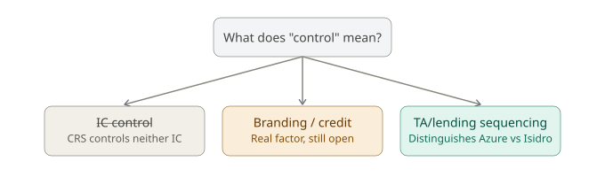
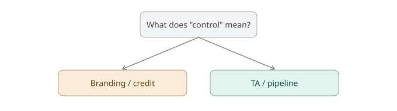
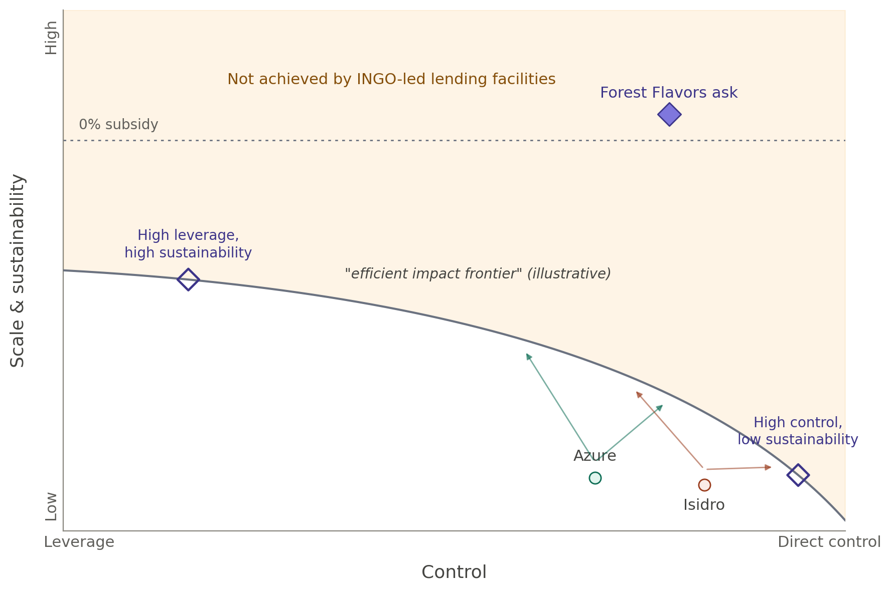

Want to suggest edits? Use “Download as text,” then open the file in Word to make tracked changes.
Forest Flavors, CRS Innovative Finance
This page maps the range of ways CRS could structure the Forest Flavors lending facility. We start with the question: how much does CRS control origination, underwriting, and the funding source, versus working through — leveraging — existing market actors who already do this?
To figure out what “control” actually means in practice, we looked at two of CRS's own reference models, Azure and Isidro, and worked through what does and doesn't distinguish them. The diagram below traces that reasoning.

Our first read on “control” was investment committee control — whoever holds the deciding vote on individual loans. That didn't hold up: CRS controls neither Azure's nor Isidro's investment committee, so IC representation doesn't track what we actually mean by control.
Branding does: both facilities are unmistakably CRS-branded, and CRS carries the reputational reward and the risk that comes with that — which is closer to the real thing.
With Azure and Isidro established as two examples of control, we looked at a further question: whether shifts in how technical assistance and lending are sequenced are themselves a control lever. Azure has moved between leading with TA and leading with lending and back again. Isidro made a different kind of shift — toward larger SMEs and lending first, with TA layered in afterward — but one that changed its approach to technical assistance in a similar way. Whether either kind of shift is a control lever in its own right, or something else entirely, is what the rest of this page works through.
Looking back at Azure and Isidro, the TA/lending sequencing debate turns out to be a bit of a red herring.
Technical assistance is how CRS generates its own pipeline. Providing TA to SMEs is, in effect, the same thing as controlling origination.
That means the sequencing question — TA first or lending first — was never really the variable distinguishing Azure from Isidro. TA is present in both cases, however the order runs.

For Azure, this holds regardless of which phase it's in. Whether the facility runs TA-first or lending-first at a given moment, CRS is providing TA and generating pipeline. Azure is a lending activity either way.
For Isidro, the shift was different but tells the same story. CRS started by generating pipeline from SMEs it was already providing TA to. Those SMEs turned out to be too small and too early-stage, so CRS moved toward larger SMEs — lending to them first, then layering TA on afterward.
In both cases, CRS already had control from the start. What changed over time wasn't control itself, but how each facility tried to reconcile that control with a push toward scale and sustainability.
That's the disconnect worth naming for Forest Flavors. Azure and Isidro's histories suggest control and scale are a trade-off — lean into one or the other, but nothing in CRS's own experience shows a facility doing both at once.
Forest Flavors is being asked to do exactly that: stay linked to CRS programs — control — while scaling, the very thing control has, so far, capped. Put simply: control caps scale. And this facility is being asked to have both anyway.
↑ Back to topThis diagram borrows its structure from Root Capital's efficient impact frontier, a tool from impact investing for weighing investment quality against the subsidy required to achieve it. Root Capital, “Toward the Efficient Impact Frontier,” SSIR
In Root Capital's version, additionality proxies for an investment's impact, and required subsidy proxies for what that impact costs. Their frontier shows the least subsidy needed to reach a given level of additionality.
Our version substitutes closely related proxies. Direct control stands in for additionality — control lets CRS shape and guarantee outcomes in a way that working through existing market actors can't ensure. Scale and sustainability stand in for the inverse of subsidy — the less external support a facility needs to run, the more scale and sustainability it has.
Read this way, the curve says something specific: the more direct control CRS wants, the more subsidy it should expect to need. And the more scale and sustainability CRS wants, the more control it has to give up.

Azure and Isidro sit below the frontier rather than on it, since there's no reason to think either is already the most efficient version of itself. The arrows show two directions a facility could move toward the frontier — toward more leverage, or toward more control — not a single predetermined path.
The dotted line marks zero subsidy: the point at which a facility runs without any ongoing subsidy input. Even at full leverage, the frontier falls short of that line — one way of naming how hard this kind of lending is to run sustainably at any control level.
The two hollow diamonds are different. They're Forest Flavors options actually being designed, so it's fair to place them on the frontier rather than below it — one leaning toward leverage and high sustainability, the other toward direct control and low sustainability. The ask sits above the frontier entirely, outside what any INGO-led facility has achieved so far.
↑ Back to top